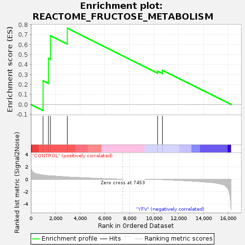
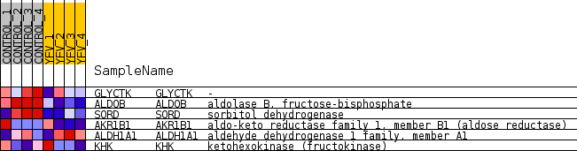
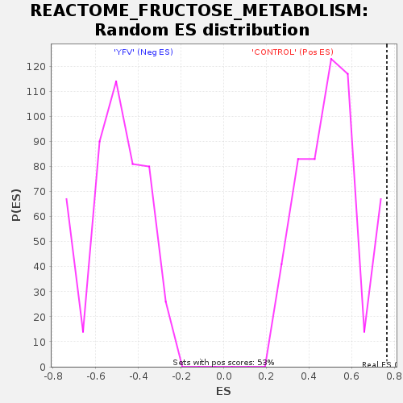

| Dataset | MATRIZ_GSE99081_collapsed_to_symbols.gsea_CLASE_99081.cls#CONTROL_versus_YFV |
| Phenotype | gsea_CLASE_99081.cls#CONTROL_versus_YFV |
| Upregulated in class | CONTROL |
| GeneSet | REACTOME_FRUCTOSE_METABOLISM |
| Enrichment Score (ES) | 0.76473755 |
| Normalized Enrichment Score (NES) | 1.5140296 |
| Nominal p-value | 0.03409091 |
| FDR q-value | 0.7613425 |
| FWER p-Value | 1.0 |

| SYMBOL | TITLE | RANK IN GENE LIST | RANK METRIC SCORE | RUNNING ES | CORE ENRICHMENT | |
|---|---|---|---|---|---|---|
| 1 | GLYCTK | - | 988 | 0.647 | 0.2379 | Yes |
| 2 | ALDOB | aldolase B, fructose-bisphosphate | 1426 | 0.545 | 0.4626 | Yes |
| 3 | SORD | sorbitol dehydrogenase | 1586 | 0.511 | 0.6887 | Yes |
| 4 | AKR1B1 | aldo-keto reductase family 1, member B1 (aldose reductase) | 2956 | 0.347 | 0.7647 | Yes |
| 5 | ALDH1A1 | aldehyde dehydrogenase 1 family, member A1 | 10281 | -0.043 | 0.3335 | No |
| 6 | KHK | ketohexokinase (fructokinase) | 10669 | -0.072 | 0.3431 | No |

